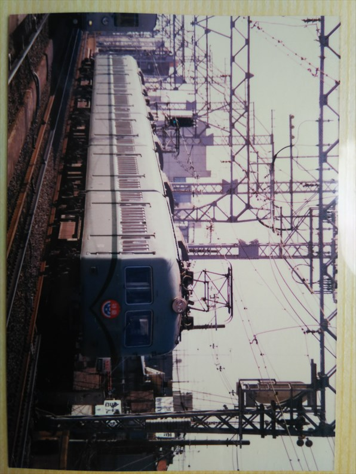

昭和５７年４月
みさき公園駅です。
初めてみさき公園に行ったときの写真です。中学に
もなって、と思われるでしょうが、たしか鉄道展か
なんかをやってたんすよね。
特急はとのサボを買った覚えがあります。
こちらは多奈川線です。
南海は古い車両も外見が似てるので貴重さがよくわ
かってなかったですが、これは当時でも結構古い車
両なんでしょうかね。
和歌山市駅で並ぶ南海と和歌山線のキハ３５。
みさき公園の帰りに和歌山市まで戻ったんやろか？
記憶にない・・・
昭和５７年４月
天王寺駅。今は無き天王寺支線ですね。
ここが今は関空・紀州路・大和路快速の発着ホームってことか。
昭和６０年２月１１日
新今宮で撮影ダイカイです。
親には注意するように言われたのを覚えてます。
四国連絡以外はこんな看板やったっけ？
橋本発の通勤用の特急ですね。
この当時は「りんかん」という名称はなかったです。
調べてみると、Ｈ特急という通称があったみたいで
す。
さっきの特急が折り返しで「こうや」となって帰っ
てきました。方向幕のデザインが今と違いますね。

四国連絡の特急っすね。
やっぱり車両の色はこの頃のほうがええよね。
急行「きのくに」の送り込みの回送です。
白浜方面へ出発していきました。
しかし、わざわざディーゼルカーを用意するって、
なかなか積極的な施策でしたね。